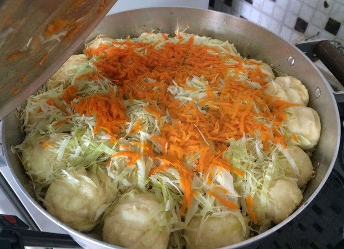

Receitas do Coração ❤
Carne de Onça
Registrada em 2016 como Patrimonio Imaterial de Curitiba, a carne de onça é até o dia de hoje identidade culinária da cidade.
Pinhão
Mais que um alimento, faz parte da identidade cultural dos paranaenses, a estrela em festas juninas, encontros familiares e feiras regionais.
Barreado
Considerado um prato de raiz da culinária paranaense e um patrimônio cultural do estado, o barreado forma parte especial da culinária familiar paranaense.
Pão no bafo
Apesar de ser um lanche simples, o pão no bafo é considerado um dos símbolos da gastronomia curitibana e Patrimônio Cultural Imaterial de Curitiba
Carne de Onça
A carne de onça é um prato à base de carne bovina crua, finamente moída ou picada na ponta da faca, temperada com cebola, cebolinha, azeite de oliva, pimenta-do-reino e outros condimentos. A costume é servir sobre fatias de pão de centeio, geralmente em porções individuais, como petisco.

Em 2016 a Prefeitura Municipal de Curitiba reconheceu a Carne de Onça como como Patrimônio Cultural de Natureza Imaterial da Cidade de Curitiba. Em 2025 o Instituto Nacional de Propriedade Industrial (INPI) concedeu ao prato o selo de IG por Indicação de Procedência, o que garante qualidade e originalidade do produto feito em Curitiba. Nos últimos anos estima-se que mais de 200 bares e restaurantes curitibanos servem o prato. Com o objetivo de promover o prato a Associação dos Amigos da Onça (AAONÇA) desde 2014 é responsável pelo Festival de Carne de Onça, que conta com a participação de diversos estabelecimentos.
Pinhão
Um prato simples, mas cheio de sabor, o arroz com pinhão. O arroz é cozido junto com o pinhão, criando uma textura e um sabor únicos. Muitas vezes, ele é combinado com carne de frango ou linguiça, o que torna o prato ainda mais delicioso. Ideal para acompanhar um churrasco ou uma refeição mais simples.
Barreado
Já preparado pelos índios carijóss que fabricavam a panela de barro, o barreado tornou-se um prato típico paranaense, em especial da culinária litorânea. Os caboclos e mestiços ao irem almoçar na casa de seus patrões, levavam produtos da lavoura e tapiocas e lhes era servido uma espécie de guisado. Era um prato feito de carne bovina gorda e toucinho, preparados com muitos temperos durante várias horas em uma panela de barro.

A panela era "barreada", ou seja, era vedada com uma massa de farinha de mandioca e água e/ou cinzas do fogão para o vapor não escapar. Essa comida podia ser guardada por dias e requentada várias vezes, sem perder o sabor e ficando cada vez mais gostosa. Assim, o prato passou a participar dos hábitos alimentares do Entrudo, o precursor do Carnaval. Durante os dias de carnaval litorâneo não se comia outra coisa que não o barreado. Geralmente é servido com ou sem arroz, farinha de mandioca, banana e como aperitivo, cachaça do litoral.
Pão no bafo
O pão no bafo é uma delícia típica de algumas regiões do Brasil, especialmente do Norte e Nordeste. Ele tem um nome curioso, não é? A expressão "bafo" se refere ao vapor quente que é gerado durante o processo de cozimento, e esse método tradicional de preparo utiliza esse vapor para cozinhar o pão.

A receita é simples, mas o resultado é incrível. Basicamente, você prepara uma massa de pão comum, pode ser uma massa de pão caseiro mesmo, e depois de fazer pequenas bolinhas ou modelar o pão do jeito que preferir, o coloca em uma panela com uma tampa bem vedada. Nessa panela, ao invés de assar no forno, o pão vai cozinhar no vapor, o que dá a ele uma textura super fofinha por dentro e uma crosta suave por fora.